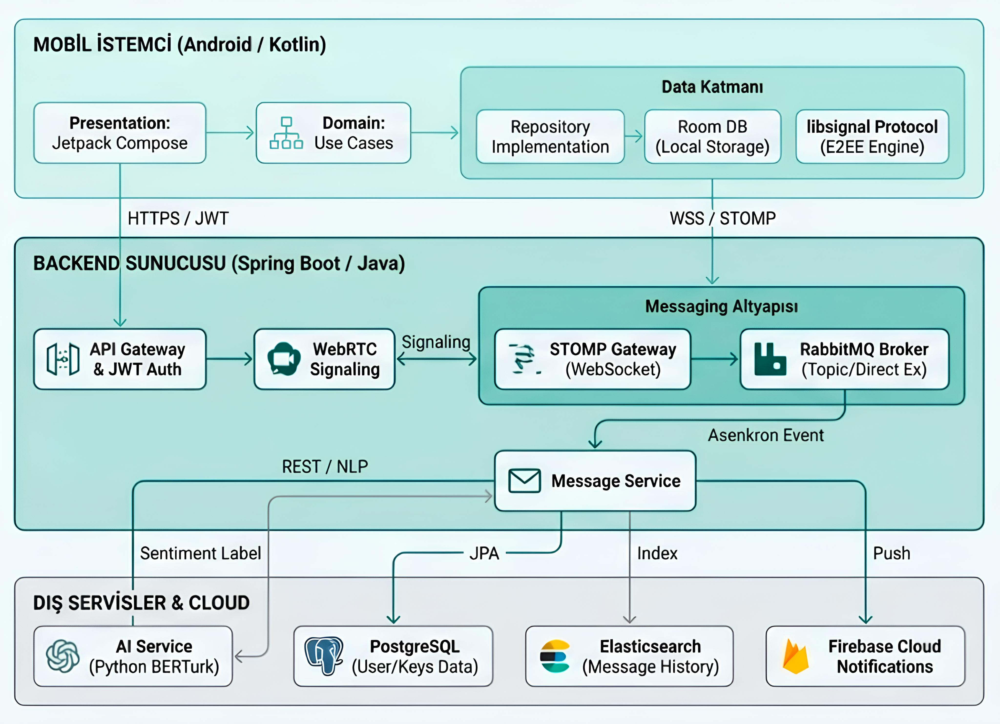

Sistem Mimarisi

Şekil 1: Spring Boot Backend, RabbitMQ Broker, Signal Protokolü ve Yapay Zeka Servisi (Python BERTurk) arasındaki veri akışını gösteren genel sistem mimarisi.
Projenin Amacı
Bu proje, güvenli haberleşme standartları ile yapay zeka destekli duygu analizi teknolojilerini birleştiren modern bir mesajlaşma uygulamasıdır. Temel amaç, Signal Protokolü kullanarak kullanıcı verilerinin gizliliğini (E2EE) sağlamak ve aynı zamanda BERTurk modeli ile mesajların duygusal tonunu analiz ederek kullanıcı etkileşimini zenginleştirmektir.
Yöntem ve Teknoloji
Sistem, mikroservis mimarisine uygun olarak tasarlanmıştır. Backend tarafında Java Spring Boot, veri iletimi için RabbitMQ ve WebSocket (STOMP) kullanılmıştır. Mobil istemci Android (Kotlin) ve Jetpack Compose ile geliştirilmiştir. Yapay zeka modülü ise Python Flask üzerinde çalışan BERTurk modelini içermektedir.
Sonuçlar
Gerçekleştirilen testlerde, sistemin yüksek trafik altında dahi mesajları 100ms altında iletebildiği ve duygu analizi modelinin Türkçe metinlerde %90 üzerinde başarı sağladığı gözlemlenmiştir. Uçtan uca şifreleme sayesinde sunucu dahil olmak üzere üçüncü tarafların mesaj içeriklerine erişimi engellenmiştir.